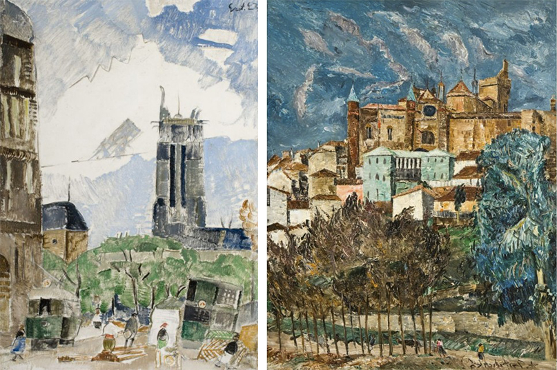
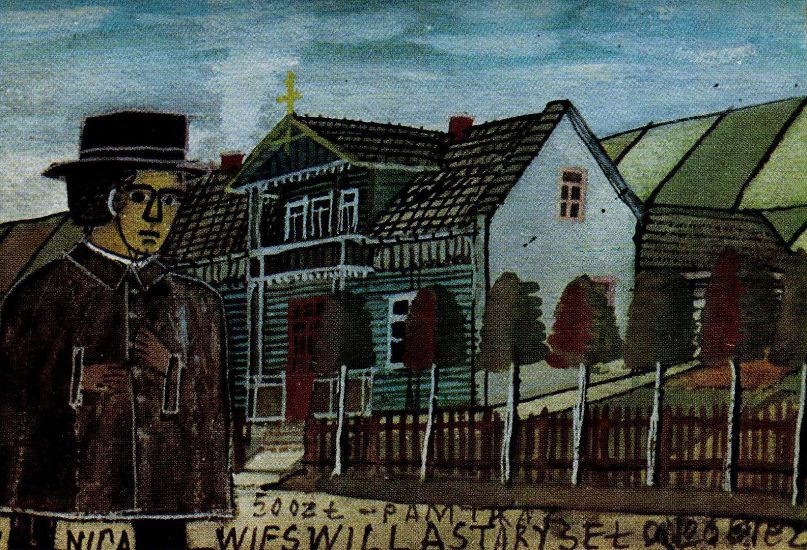
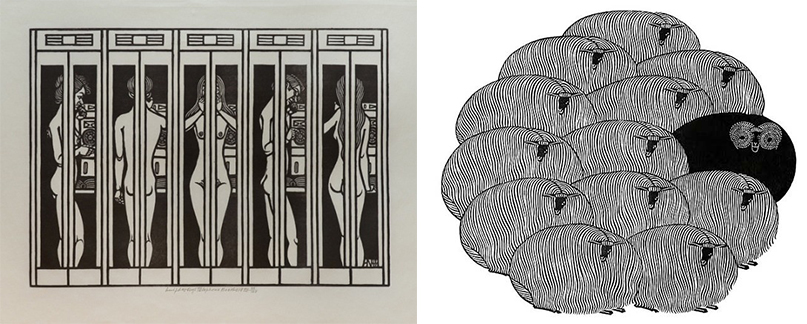
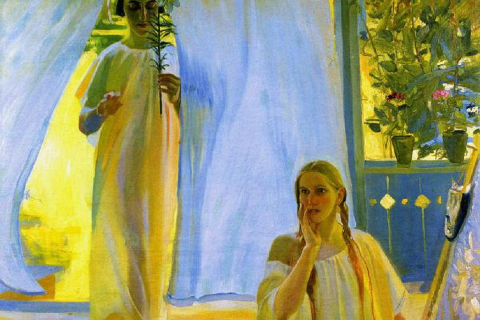

Подборка украинских Художников, которые жили и работали в промежутке
с конца ХІХ – начала ХХ века, а их произведениями восхищаются во всем мире.
Мария Башкирцева
Большую часть жизни выдающаяся украинская художница провела за границей,
а именно во Франции. Сегодня ее полотна хранятся в музеях многих странах мира,
а в Ницце представлен отдельный зал с работами.
С самого начала обучения Мария Башкирцева выигрывала медали и призы на выставках,
ее работы приводили в восторг Анатоля Франса, Эмиля Золя и, конечно, все газеты
и журналы. Художница умерла в довольно молодом возрасте и сегодня ее оригинальные
картины довольно трудно найти.
Алексей Грищенко

Этот художник также относится к парижской школе. Его работы постоянно экспонируются
в Musée National d’Art Moderne Парижа, the Royal Museum в Копенгагене и Museum of Montreal.
По экспертным оценкам стоимость всех произведений Олексы Грищенко превышает
700 000 долларов. Грищенко работал в стиле динамического экспрессионизма, а его художественной
манерой восхищались Дерен, Дюне, Боннар и Леже.
Никифор из Криницы

У этого художника-примитивиста около 17 имен, под которыми он фигурировал в искусствоведческих
книгах всего мира. Весь мир заговорил о нем, как о художнике после выставки в 1932 году в Париже
в галерее Леона Марселя, где экспонировались 200 рисунков на библейную и светскую тематику.
Интересно, что Никифор Криницкий никогда не бывал в мегаполисах, но при этом рисовал города
с высоты птичьего полета, не меньше внимания заслуживают и его проекты городов-цветов.
Яков Гнездовский

Один из самых известных в мире галицких художников ХХ века. Его произведения в свое время
украшали президентские апартаменты Джона Кеннеди в вашингтонском Белом Доме. Дебютное
признание художник получил в 1950 году на выставке графики в Миннеапольскому институте искусств.
Окончательным признанием мастерства Гнездовского в США произошло, когда галерея Ассоциации
Американских Художников в Нью-Йорке купила 220 оттисков его ксилографической серии «Сосны».
Александр Мурашко

Александр Мурашко известен в первую очередь как портретист. Его основным стилем стал популярный
на тот момент французский импрессионизм, что позволяло мастеру создавать чувственные и
эмоциональные образы. Его картины закупали для частных коллекций королевские семьи, а его личные
выставки проходили в Берлине, Кельне, Дюссельдорфе и Венеции. Мурашко был одним из основателей
Украинской Академии Искусства, он способствовал мощному развитию украинского искусства.
Но в 20-е годы художник был убит.
Александр Мурашко известен в первую очередь как портретист. Его основным стилем стал популярный
на тот момент французский импрессионизм, что позволяло мастеру создавать чувственные и
эмоциональные образы. Его картины закупали для частных коллекций королевские семьи, а его личные
выставки проходили в Берлине, Кельне, Дюссельдорфе и Венеции. Мурашко был одним из основателей
Украинской Академии Искусства, он способствовал мощному развитию украинского искусства.
Но в 20-е годы художник был убит.